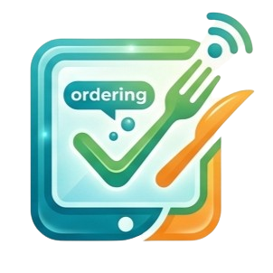
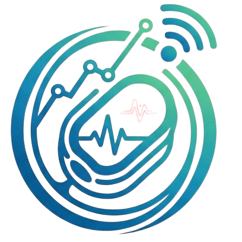

Information & Communication Technology
DevOps & Networking
CCNA • AWS • Labs
Automation • Cloud • Infrastructure
Open to Opportunities
IT professional with a background in system engineering, IT support, and project management, bringing strong expertise in troubleshooting, operations, and stakeholder coordination. Currently transitioning into DevOps and networking roles, with hands-on lab experience and ongoing CCNA and AWS certifications, focusing on network implementation and cloud-based solutions.
I leverage AI tools to accelerate development workflows, including web, multimedia, and automation tasks, and continuously expand my skills through practical projects, with a goal to build and deploy a mini game.

Developed an interactive ordering platform to streamline menu browsing and ordering processes for F&B operations.

Built a hardware-based solution to measure real-time heart rate (BPM) and blood oxygen (SpO₂) levels.
Created a localised travel application to help Japanese users navigate Malaysia with ease and confidence.
Designed and built virtual lab environments to practise network configuration, troubleshooting, and CCNA-level concepts.
Produced short-form AI-assisted videos for marketing and digital content engagement.
Tracking system performance, identifying bottlenecks, and ensuring stable and efficient IT operations.
Understanding core networking concepts including TCP/IP, subnetting, VLANs, and basic network troubleshooting.
Hands-on experience with virtual machines, cloud computing platforms and infrastructure.
Utilising AI tools and basic data analysis to enhance productivity and support decision-making.
Creating clear and structured documentation to support system processes, issue tracking, and knowledge sharing.
Diagnosing and resolving technical issues while ensuring smooth day-to-day system and endpoint operations.
I'm currently transitioning into a networking-focused role and open to opportunities where I can contribute, learn, and grow.
Download My Resume© 2026 Elmer Tang. All rights reserved.